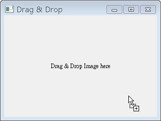

想 要在圖形元件上啟用拖放功能，可以使用QWidget上所繼承下來的setAcceptDrops()方法，設定元件接受拖放動作，在拖放動作發生時，會 有相對應的QDragEnterEvent、QDragMoveEvent、QDragLeaveEvent與QDropEvent等事件發生，您可以重 新定義dragEnterEvent()、dragMoveEvent()、dragLeaveEvent()與dropEvent()等事件處理者，以 處理相對應的拖放事件，通常會使用的是dragEnterEvent()與dropEvent()。
以下是一個簡單的拖放事件處理程式，您可以將圖檔拖放至QLabel上，QLabel會自動載入圖片並顯示出來：
- ImageLabel.h
#ifndef IMAGE_LABEL_H
#define IMAGE_LABEL_H
#include <QLabel>
class QDragEnterEvent;
class QDropEvent;
class ImageLabel : public QLabel {
Q_OBJECT
public:
ImageLabel(QWidget *parent = 0);
protected:
void dragEnterEvent(QDragEnterEvent *event);
void dropEvent(QDropEvent *event);
private:
void readImage(const QString &fileName);
};
#endifImageLabel繼承了QLabel，並且將重新定義dragEnterEvent()及dropEvent()，以處理 對應的拖放事件，readImage()則會在拖放圖檔至QLabel上時，將圖片檔案載入並設定給QLabel來顯示，ImageLabel的實作如 下：
- ImageLabel.cpp
#include <QDragEnterEvent>
#include <QDropEvent>
#include <QUrl>
#include <QFile>
#include <QTextStream>
#include "ImageLabel.h"
ImageLabel::ImageLabel(QWidget *parent) : QLabel(parent) {
this->setAcceptDrops(true);
}
void ImageLabel::dragEnterEvent(QDragEnterEvent *event) {
if(event->mimeData()->hasFormat("text/uri-list")) {
event->acceptProposedAction();
}
}
void ImageLabel::dropEvent(QDropEvent *event) {
QList<QUrl> urls = event->mimeData()->urls();
if (urls.isEmpty()) {
return;
}
QString fileName = urls.first().toLocalFile();
if (fileName.isEmpty()) {
return;
}
this->setWindowTitle(fileName);
readImage(fileName);
}
void ImageLabel::readImage(const QString &fileName) {
QPixmap pixmap(fileName);
this->setPixmap(pixmap);
this->resize(pixmap.width(), pixmap.height());
}setAcceptDrops(true)設定接受拖放，當圖片檔案被拖入元件時，發生QDragEnterEvent並分派 給dragEnterEvent()處理。QDragEnterEvent的mimeData()方法傳回QMimeData，當中包括了MIME （Multipurpose Internet Mail Extensions）類型的相關資訊，hasFormat("text/uri-list")測試是否含有文字資訊的URI（Universal Resource Identifier），也可以使用hasUrls()來進行同樣的測試。
當拖放行為開始執行時，執行拖放行為的一方會需要知道接受放置的另一方接受何種操作，例如拖放檔案時，當拖放完成時，原檔案是被複製或移動。執行拖放行為的一方會設定可被接受的動作，而接受放置的一方可選擇接受何種動作，並傳回相關資訊給執行方，acceptProposedAction()的作用為接受執行拖放行為的一方所設定的預設動作。
當放置時會發生QDropEvent並分派給dropEvent()來處理，QMimeData的urls()取得所拖放檔案的QUrl，由於您所拖放的 檔案可能不只一個，所以urls()傳回的是內含QUrl的QList物件，您取得第一個QUrl並取得檔名資訊，再進行圖檔的讀取並設定至QLabel 上。
可以撰寫以下的程式來執行：
- main.cpp
#include <QApplication>
#include <QMainWindow>
#include "ImageLabel.h"
#include <QTextEdit>
int main(int argc, char **argv) {
QApplication app(argc, argv);
ImageLabel *imgLabel = new ImageLabel;
imgLabel->setWindowTitle("Drag & Drop");
imgLabel->setText("<center>Drag & Drop Image here</center>");
imgLabel->resize(300, 200);
imgLabel->show();
return app.exec();
}執行時，元件若可以進行拖放，則會出現相關的游標以提醒使用者，在Windows下是個「+」的游標：

有些元件預設即接受拖放行為，例如QLineEdit，您可以直接將文字拖曳至QLineEdit，這會將拖曳的文字置放至您置放的位置，若您想改變這個 行為，可以設定QLineEdit的setAcceptDrops()為false，然後設定其父元件的setAcceptDrops()為true，讓 拖放事件傳播至父元件，由父元件來處理拖放相關事件，以改變QLineEdit的預設拖放行為，例如讓純文字檔案拖至QLineEdit時，可以自動載入 文字至QLineEdit中。